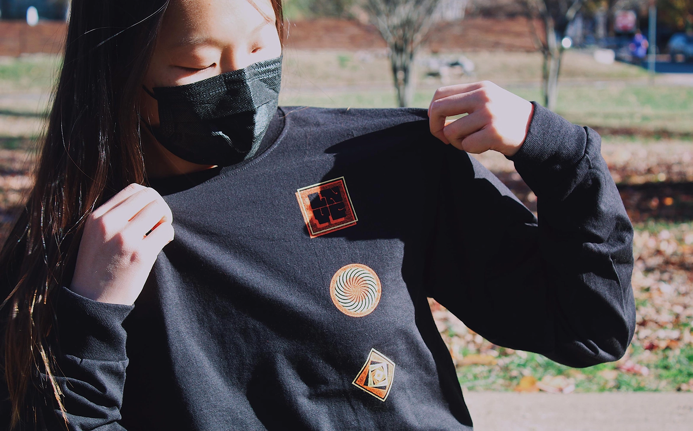
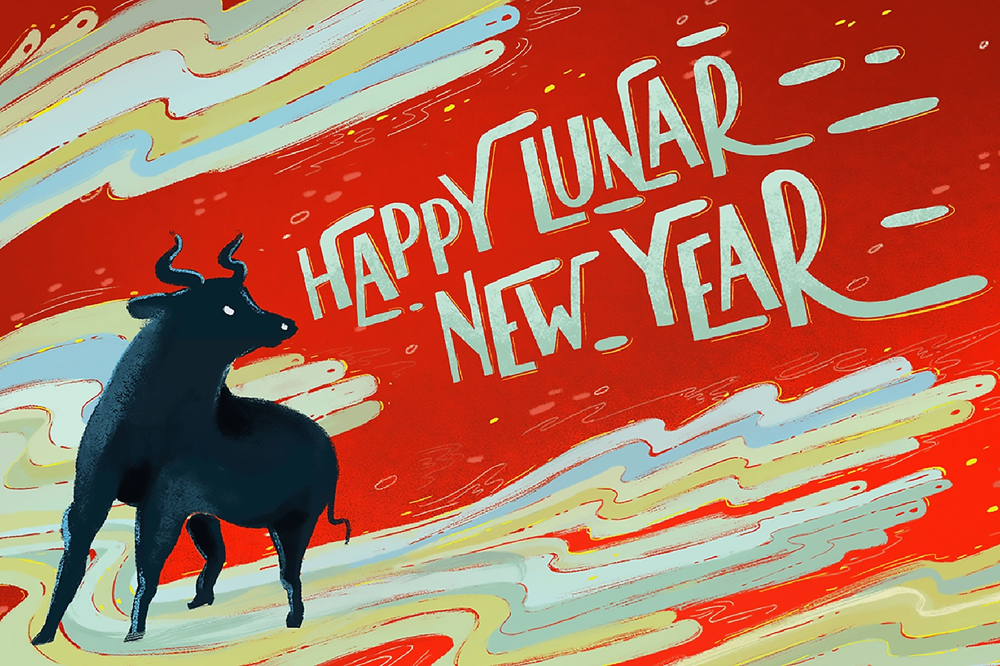
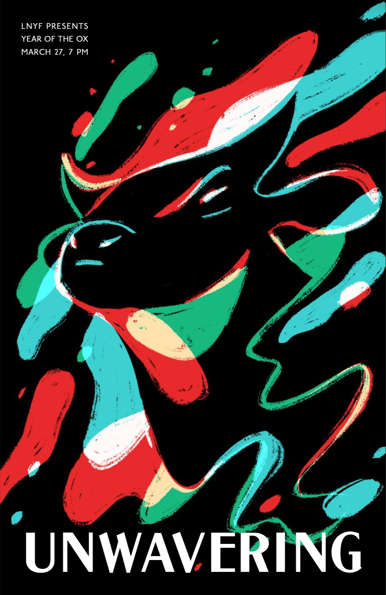
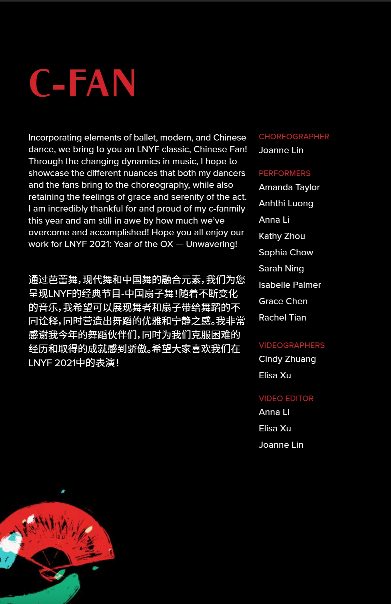
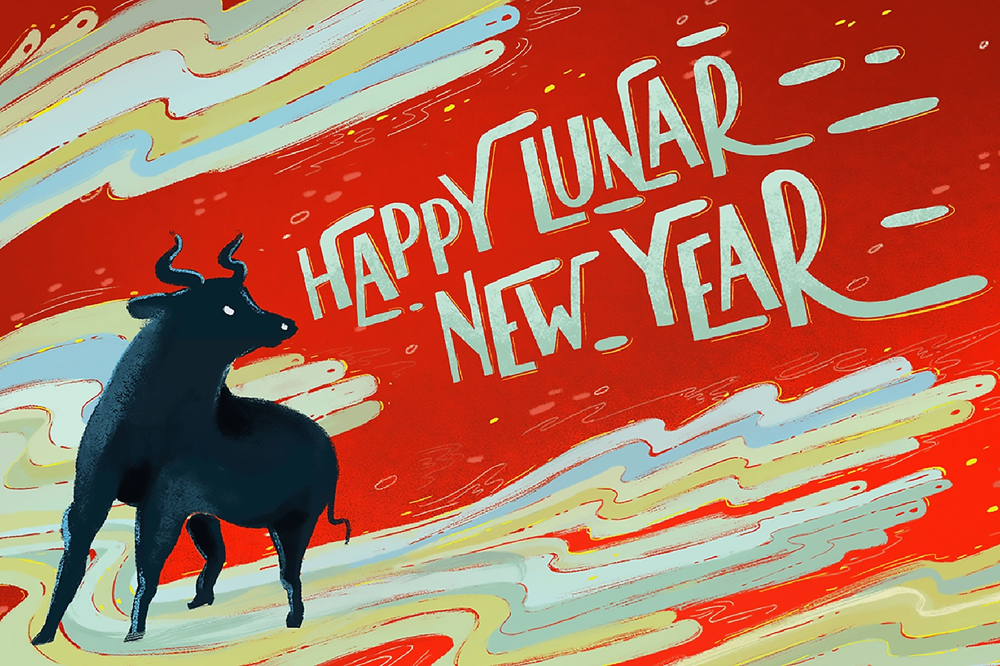
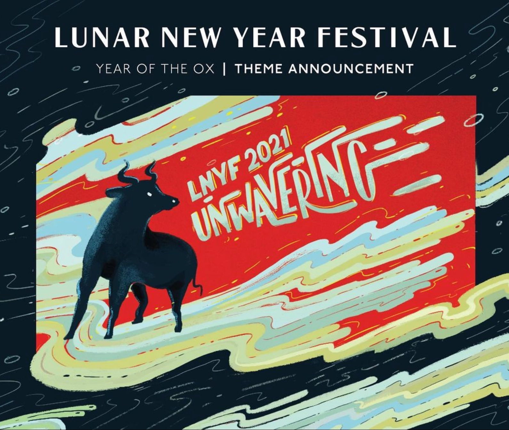
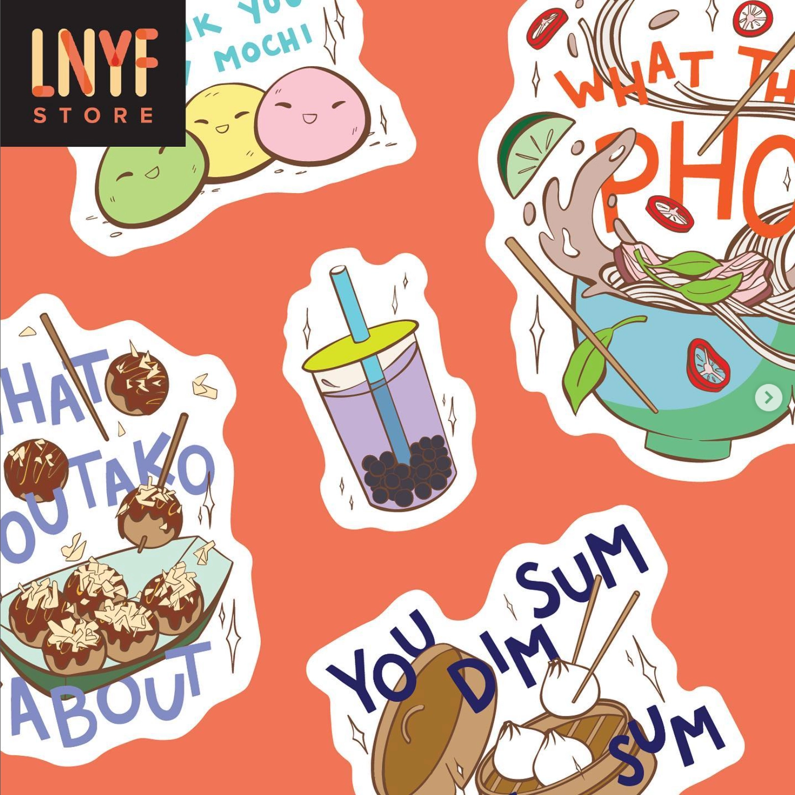
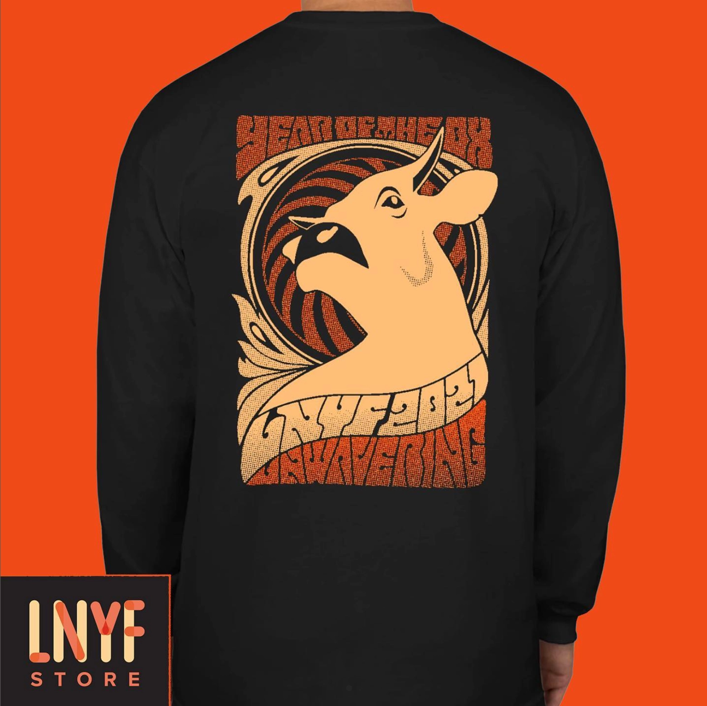

Lunar New Year Festival is an annual performance at Washington University in St. Louis that brings together Asian cultural dance, music, and theater. For the 2020-21 year, I acted as Co-Art Director to create a branding package for the Year of Ox, merch to profit of the LNYF Store, and create photos and videos to advertise on campus and social media.
All designs are my own creation unless specified.
Project Info
2020-21 / Branding
Co-Art Director
Eugenia Yoh
All designs are my own creation unless specified.
Project Info
2020-21 / Branding
Co-Art Director
Eugenia Yoh


Secondary graphic style done in collaboration with Eugenia Yoh. Lettering work by myself.

With LNYF we also debuted a store to sell merch. Branding done by myself.
Ox animation for show opening and social media


Digital program design for the online show
Secondary graphic style done in collaboration with Eugenia Yoh. Lettering work by myself.


With LNYF we also debuted a store to sell merch. Branding done by myself.

